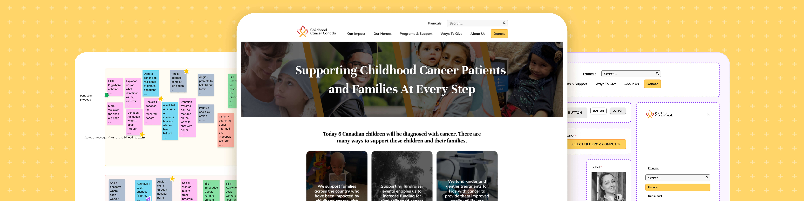
Website Redesign
Childhood Cancer Canada
Childhood Cancer Canada (CCC) is a national-level nonprofit org dedicated to supporting cancer research and childhood cancer families and patients through non-medical funding. As a small-sized organization with limited staff and resources, its website is its face, brand, and main source of impact.
While the website was mostly functional, major organizational changes during the pandemic had left it fragmented and unpolished.
Context
This is a real project for a real client and was facilitated by the capstone course of my master's program. Although the course requirements were predetermined, we consciously avoided confining ourselves to them and instead strived to maximize the value we could provide to the client within the allotted timeframe.
Our team of 5 worked on this project from January 2023 - April 2023
my contributions
Design System Lead
Led creation of the new design system, redesign for the program application process which is one the two main functional flows.
Information Architect
Led the information architecture analysis and redesign for the website.
UX Researcher
Additionally, I was involved during the analysis phases of secondary & primary research and helped in conducting formative evaluations of our redesign's prototypes.
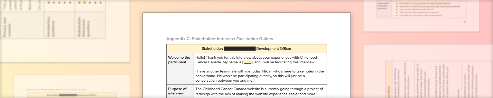
Tapping into our client's experiences
The kick-off had shed some light on the challenge before us, but in order to learn more about the organization, the people behind it, and their own struggles with the website, we decided to conduct one-on-one semi-structured stakeholder interviews with the 4 main staff members of the CCC team.
two main user groups
The website was mainly targeted towards Donors (current and potential) who are the main source of funding for the organization, and Social/Healthcare workers who acted as a bridge between the organisation and people impacted by childhood cancer.
"There is a limited pool of donation money that is being distributed between various organizations. A good website would give us credibility and help our donation base grow."
- Staff Member
prevalent functional issues
The staff members were well aware of the challenges faced by visitors. This was mostly because the simplest way for visitors to overcome these difficulties was to directly contact the staff through email or phone. However, this presented an additional burden on the already lean team of CCC.
"Visitors would call us and say, 'I was trying to fill this form but it's not doing anything,' so I'd have to manually submit their form on the backend."
- Staff Member
desired communication outcomes
In addition to the potential functional issues, we were able to distil insights from internal stakeholder interviews to define the following communication goals for the redesigned website:
- Inform website visitors of the organization's research support efforts
- Compel and empower the site visitors to support the organization through donations
- Provide information on the various funding programs
- Highlight upcoming events and celebrate existing impact
Discoveries & Surprises
Armed with the preliminary findings, we launched a survey to 200 past donors, 50 social workers, and 200 randomly picked newsletter subscribers to collect demographic and attitudinal data on our users. On completion, participants were given the option to register for a 30 minute semi-structured interview to help us gain a nuanced understanding of their individual experiences.
uh oh...
Turns out we had grossly overestimated the response rates to for the survey. A total of only 6 people responded to the survey with 2 social workers and 1 donor expressing interest for participation in our interviews.
This was a big blow to our primary research plans, and we were already operating within super strict timelines.
Amplify secondary research efforts
While insights from primary research are incredibly valuable and irreplaceable, we had to keep moving.
The team made a split-second decision with our client to rely on secondary research to pad our primary research. My focus for secondary research was on literature review and google analytics.
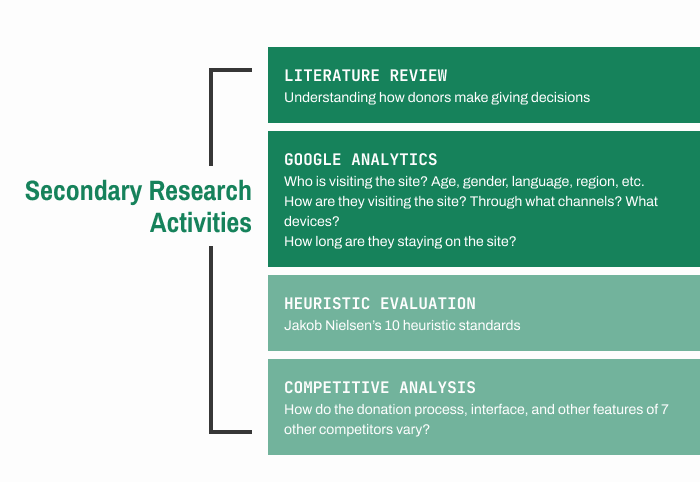
Major secondary research activities undertaken
Defining our Audiences
The Potential Donor
Persona for the Potential Donor user group
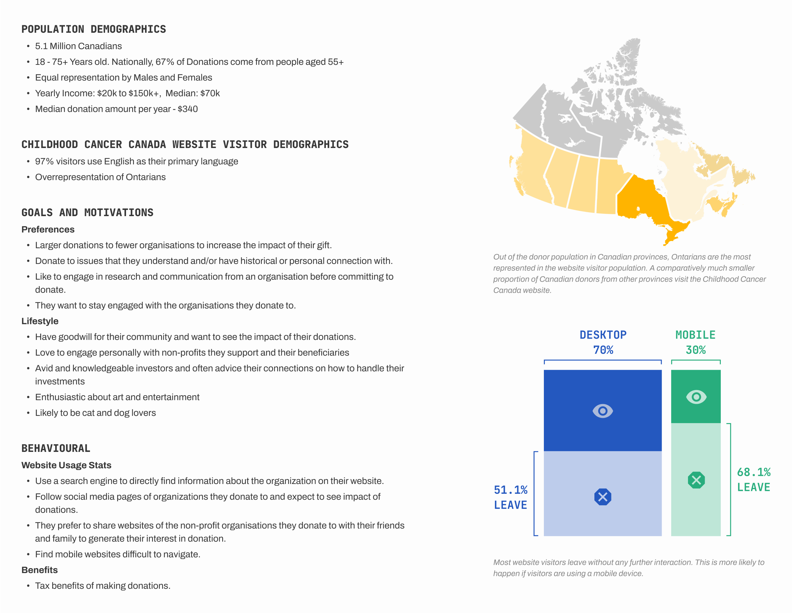
User profile for the Potential Donor user group
Defining our Audiences
The Social / Healthcare Worker
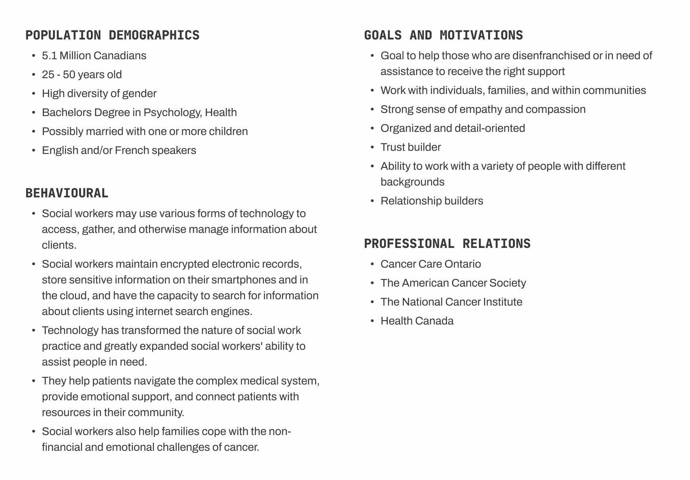
User profile for the Social / Healthcare worker user group
collaborative ideation
Our client showed incredible interest in the insights we were sharing, so we invited them to our ideation session!
Animation using stickies to illustrate the ideation, affinity mapping, and voting process to solve challenges for potential donors.
After collecting and clustering the ideas based on overlapping intent and functionality, each team member anonymously distributed 3 points for impact and feasibility each amongst the clusters.
impact and feasibility?
An idea was considered more impactful if it added value to the audience through improved content or processes; Ideas that could be implemented in the near future and required minimal additional development work.
setting priorities
Our client worked with a web-dev vendor and drastic changes to the website were very rare. Since big functional changes to the website would potentially need external funding support, we focused on developing feasible high impact ideas first and tackling less impactful yet still feasible ideas next.
homepage
Potential donors are looking for trustworthy and impactful organizations
When donors compare different organizations, they take into account the charity's mission, the work they do, their impact on the beneficiary communities, and most importantly, how they use donations. Previously, this information was buried under different sections spread across the website which most first-time visitors did not come across. Good visual design is also important to establish legitimacy.
redesigned homepage
Reorganising the information and content strategy to present most important facts about the organisation upfront. The new homepage highlights impactful statistics about childhood cancer, the programs they run, the research they support and their impact in the past year.
The new homepage also guides visitors to explore other relevant sections of the website as and where appropriate.
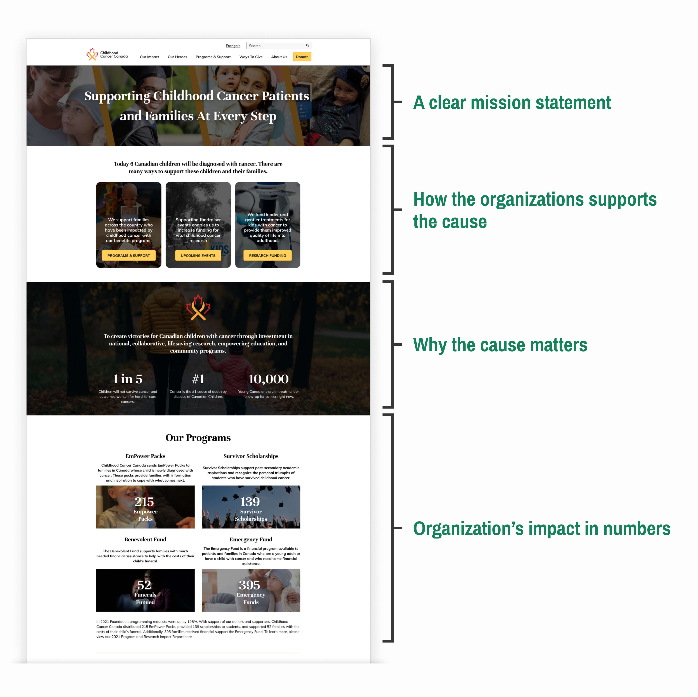
Redesigned homepage with labels indicating purpose of the different sections on the page
Programs page
Lack of clear directions for program applicants
The organization runs several programs for families and children affected by childhood cancer; however, each program has a certain eligibility criteria that is not immediately clear in the old design. The applicants therefore have to start applications for each program to see the eligibility requirements which is not ideal.
redesigned Programs page
By itemizing the descriptions texts and conveying all the necessary details like purpose of the program and its eligibility requirements at the programs page level we allow applicants to skim through all the programs to see if which one they can benefit from.
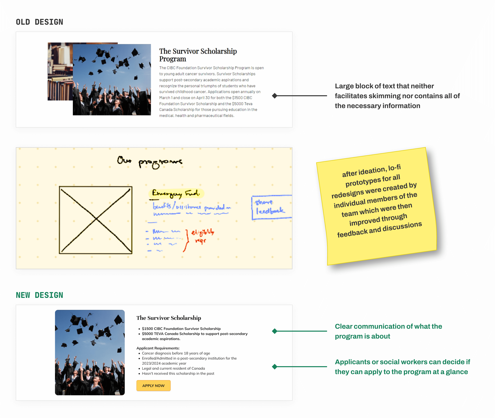
Old design, lo-fi prototype, and redesign of the cards on the programs page
Program Forms
Application forms for programs are unstructured, inconsistent, and monolithic
Current application forms are single pages and the information requested from the applicant lacks a clear flow throughout the form. This means that the form is not only visually overwhelming at a glance, but also requires frequent context switching. Moreover, the writing style used to convey at the start and end of the form is quite verbose.
redesigned Program Forms
By reorganising the input fields and paginating the form, the redesign helps the applicant by providing manageable clusters of relevant information. Glancing at the visual progress indicator gives the applicant an immediate idea of the form's length.
Using simpler and more directive language for the communicating before the after the form helps immensely in comprehension.
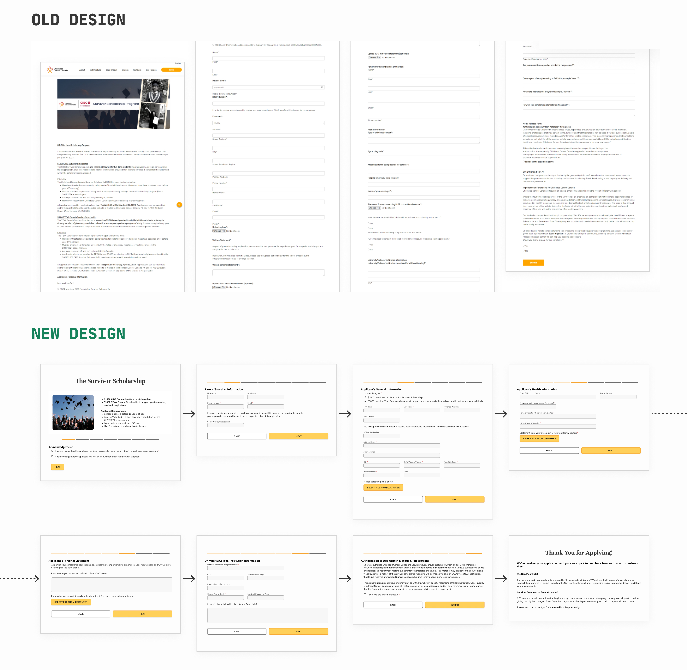
Old form designs were monolithic whereas the redesign gives more gives more structure through pagination
post-submission experience
Lack of post-submission communication leaves applicants in a state of uncertainty
Applicants often experience the urge to follow up via email multiple times in order to inquire about their application status. This is because they lack clarity regarding the estimated decision timeline and remain uncertain about whether a decision has already been made, including the possibility of their application being rejected.
redesigned experience
After submitting your application, the user is directed to a dedicated thank you page that provides an estimated wait time for that particular program. This page also guides them to other parts of the website, thus helping them build a lasting relationship with the organization.
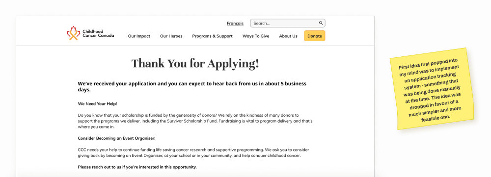
"Thank You" page for a scholarship program
Information Architecture Redesign
Reorganising the content would help tremendously in improving usability and fulfilling the site's purpose
From the moment we started on the redesign, I started noticing potential for dramatic usability improvements through even simple IA changes. This motivated me to spearhead a comprehensive IA restructuring of the website.
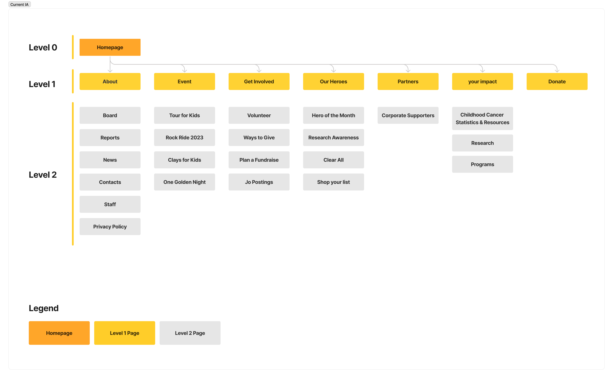
Old information architecture schematic for the nav bar
Keeping in mind the nature of this project and its constraints, and the fact that there was already a lot of good content on the website, I prioritised reusing existing content while minimising need for creation of new content. The first step was to develop understanding of content on all level 2 pages through a preliminary content analysis.
Content Analysis
By identifying the purpose of each page through my own understanding, I made judgements about the effectiveness of existing titles in representing the identified intent of each page. I also took note of any emergent ideas for new labels or identified issues throughout this process.
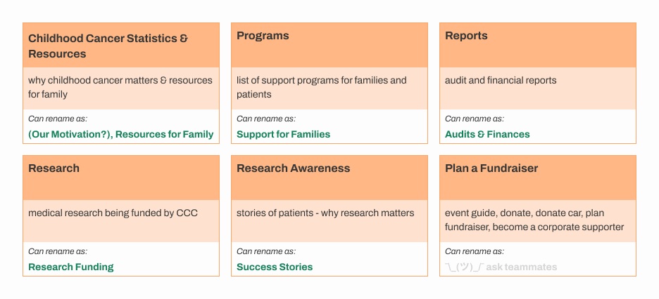
Level 2 pages where page title didn’t accurately represent their content
Card Sort Study
How would first-time visitors group and understand information from the navigation menu?
Identifying patterns and themes by observing how first-time visitors interact with the nav items provided a solid foundation for the upcoming IA changes.
We used Optimal Sort to run the study asynchronously with 10 participants recruited through convenience sampling.
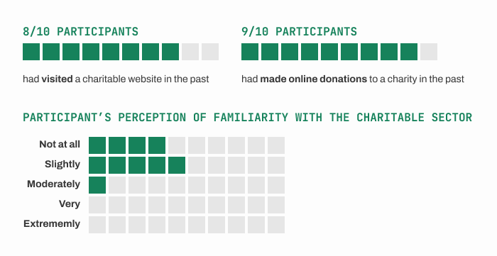
Results from pre-study questionnaire for card sort participants
While most participants had previous experience with other charity websites and online donations, they were not very familiar with the charitable sector itself. In other words, the participants had an existing mental model for the structure of similar websites and were likely not biased through internal experience with the sector.
Standardization Matrix
Starting with the obvious groupings
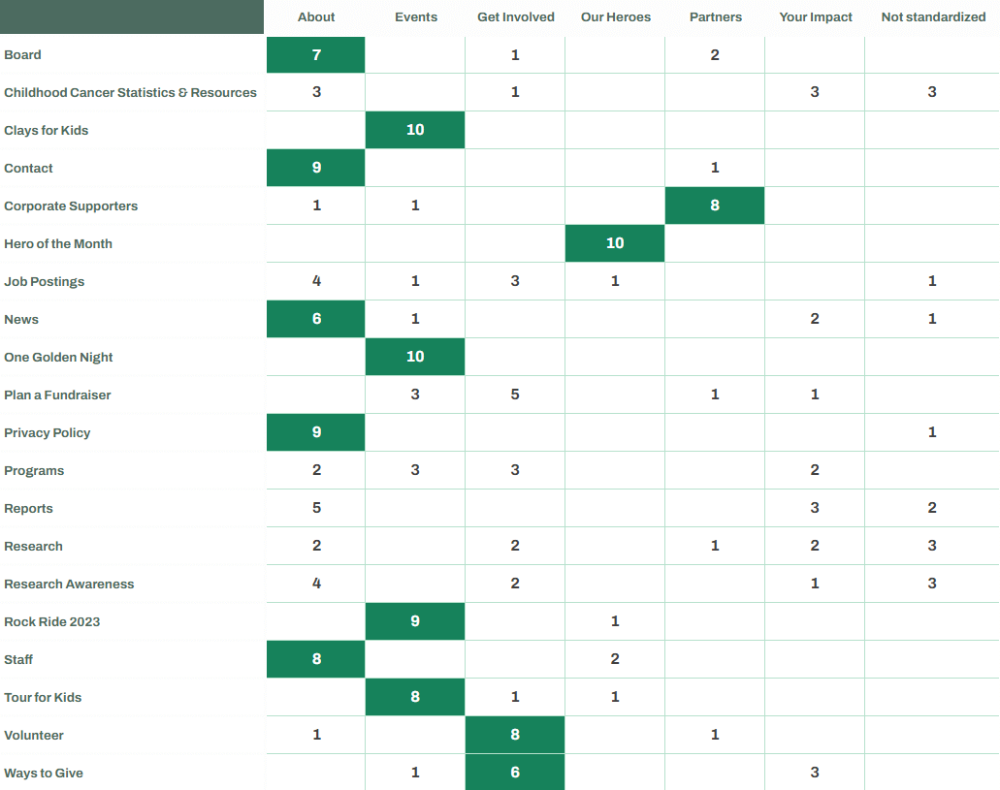
Standardization matrix based on card sort results with high confidence groupings are highlighted
With the help of the card sort results, I focused on cards that had representative names and were grouped together with higher confidence (sorted into fewer categories with high frequency). These groupings were the starting point for the IA redesign. I also started relabelling level 1 headings at this stage based on the content analysis. Remaining level 2 cards were relabelled and categorized based on these card sort results, content analysis insights, and intuition.
content reorgnisation
There was a lot of impactful content across the website but it was not easy to discover
Upon discovery of repetitive content between different pages, I refined the content analysis to individual subsections of each page. Rearrangement of content to increase context relevance (similar content together) helped tackle repetition of content and resulted in effective storytelling of the organisation's mission and impact.
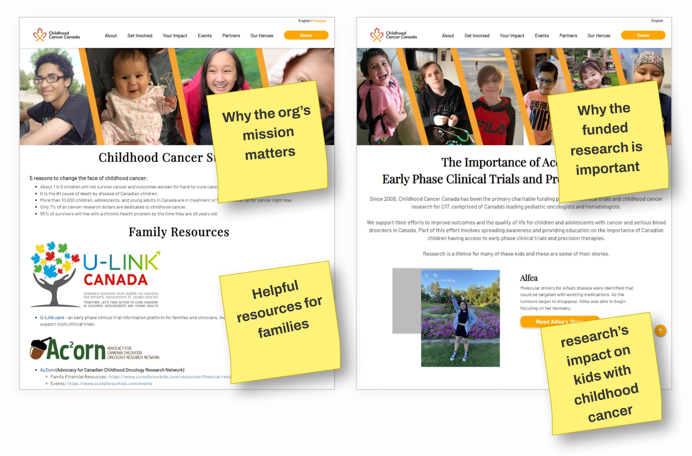
Some pages from the old website with impactful content that is brought to the forefront in the redesign
team feedback time!
The team came together to provide feedback on the proposed IA changes, but we discovered a big issue!
Some of the team's feedback was around level 1 pages, but half the team members didn't even know there were level one pages. On probing further, we discovered a major front end bug in the nav bar.
We suspect trigger area for hover interactions for the link and the drop-down were not perfectly aligned. Some teammates never discovered level 1 pages!
This and other such development issues were communicated to our client's web-dev vendor.
After incorporating content and context analysis for level 1 pages, we arrived at the final iteration of the redesigned IA schematic.
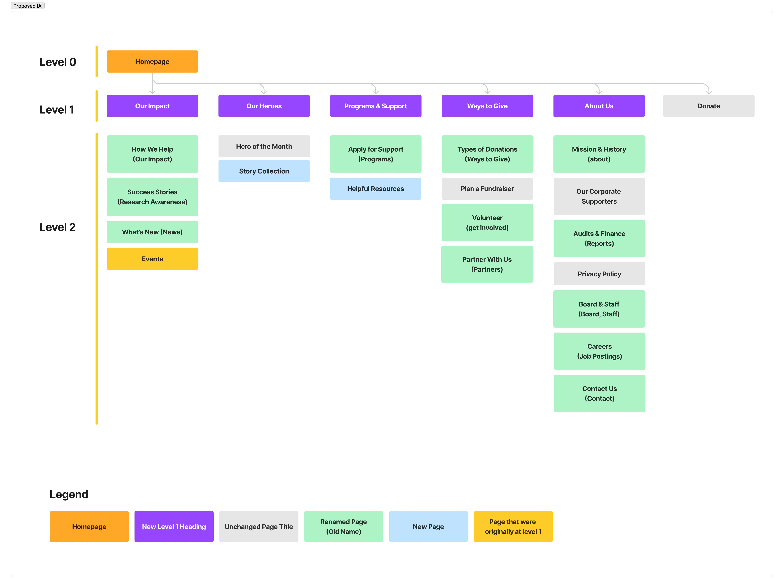
New information architecture schematic for the nav bar
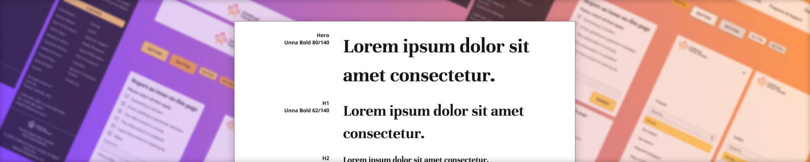
Creative strategy
Giving Childhood Cancer Canada a delightful facelift
The old website's theme could use some visual design upgrades for both functional and decorative reasons. It was important for us to be intentional in our design decisions so that they support the content and message and not introduce any new usability issues. We also envisioned the new UI theme to be an evolution of the current one rather than a dramatic departure from it.
"Gold is the color of childhood cancer awareness - it represents resilience and hope."
- Staff Member
Mobile first
All design components were created with variants for both mobile and desktop
Mobile experience for the old website presented severe challenges for visitors. Google analytics showed that mobile users have a considerably higher bounce rate compared to desktop users. Moreover, many first-time visitors use a mobile device to access the website. Therefore it was important for us to prioritize a mobile first experience.
"I remember when my child was hero of the month, I shared the link on all my groups. But I had to ask all of them to use their laptops because the mobile website is just so bad!"
- Family Member
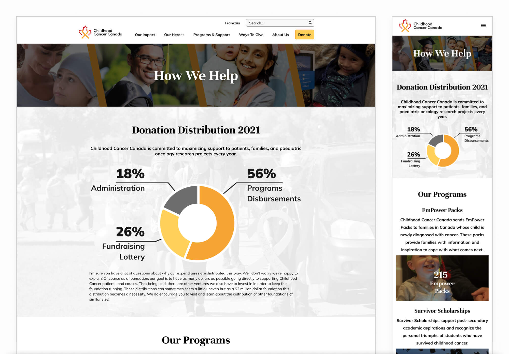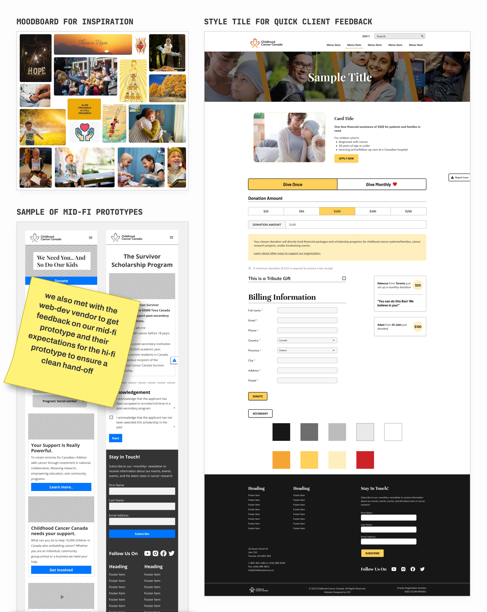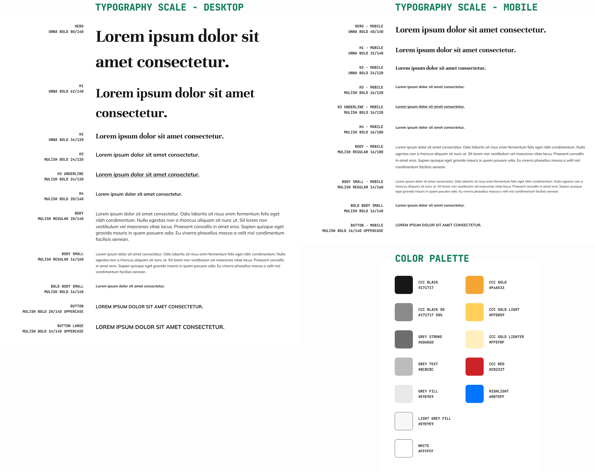

A sample of components from the Hi-Fi Design System